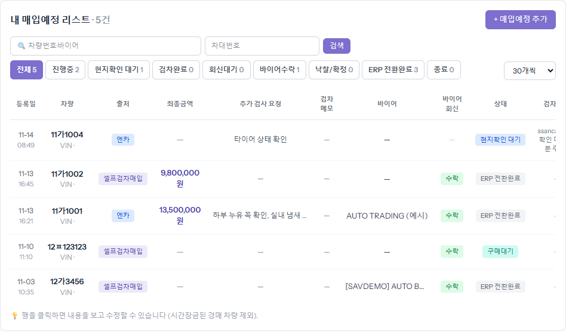
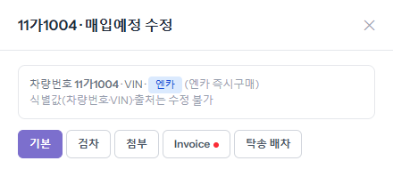
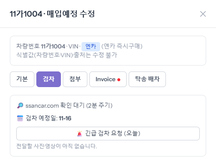
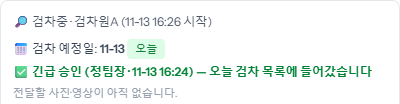
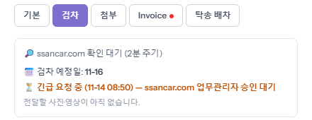
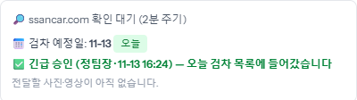
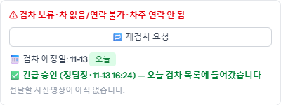
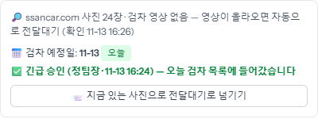

4단계
같은 [검차] 탭에서 [긴급 검차 요청 (오늘)]을 누르고 사유를 적어 보냅니다
예정일이 내일 이후인데 바이어가 오늘 답을 줘야 할 때 씁니다. 사유는 선택이지만 적어 두면 승인하는 사람이 판단하기 쉽습니다. [요청 보내기]를 누르면 확인 창이 한 번 뜹니다.

매입예정에 올린 차는 ssancar.com 검차 목록에 들어가 검차원이 찾아갑니다. 검차가 어디까지 왔는지는 차 줄을 눌러 오른쪽 창의 [검차] 탭에서 봅니다(목록의 「검차상태」 칸에도 같은 말이 한 줄로 나옵니다). 검차 사진·영상이 올라오면 차는 저절로 「전달 대기」로 넘어갑니다.
왼쪽 메뉴 「매입예정」을 엽니다. 검차를 기다리는 차는 「상태」 칸이 「현지확인 대기」입니다. 그 차 줄을 아무 데나 누르면 오른쪽에 창이 열립니다.

창은 [기본] 탭으로 열립니다. 바로 옆 [검차]를 누르면 검차 상태가 나옵니다. 맨 위 한 줄이 지금 상태이고, 그 아래가 검차원이 오기로 한 날(「검차 예정일」)입니다. 갓 올린 차는 「ssancar.com 확인 대기 (2분 주기)」로 보입니다.


검차원이 검차앱에서 시작을 누르면 「검차중 · 검차원 이름 (시작 시각)」이 보입니다. 사진·영상까지 올리면 이 화면을 따로 볼 필요 없이 차가 「전달 대기」로 옮겨 갑니다.

예정일이 내일 이후인데 바이어가 오늘 답을 줘야 할 때 씁니다. 사유는 선택이지만 적어 두면 승인하는 사람이 판단하기 쉽습니다. [요청 보내기]를 누르면 확인 창이 한 번 뜹니다.
보내면 「긴급 요청 중 … 승인 대기」가 뜹니다. ssancar.com 검차 담당이 승인하면 예정일이 「오늘」로 바뀌고 그 지역 검차원 목록 맨 끝에 들어갑니다. 기각되면 예정일은 그대로이고, 다시 요청할 수 있습니다.


검차원이 차를 못 보고 넘긴 경우입니다. 사유(차 없음/연락 불가·차량 상태 불량·영업 요청·기타)와 검차원 메모가 함께 보입니다. 차주와 연락이 닿았거나 문제가 풀렸으면 [재검차 요청]을 눌러 검차 목록에 다시 올립니다.

검차 사진은 올라왔는데 영상이 아직이면 「사진 N장 · 검차 영상 없음」이 보입니다. 기다리면 영상이 올라오는 대로 저절로 넘어갑니다. 바이어와 바로 얘기해야 하면 이 버튼으로 지금 있는 사진만 갖고 「전달 대기」로 넘깁니다. 나중에 올라온 영상은 바이어 링크에 자동으로 더해집니다.
